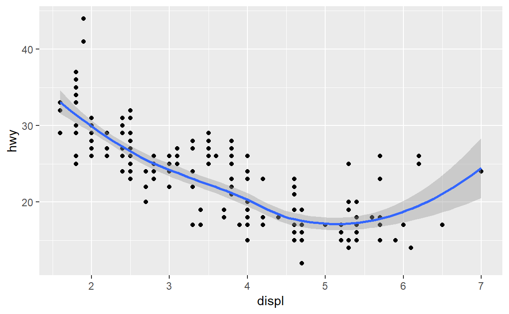
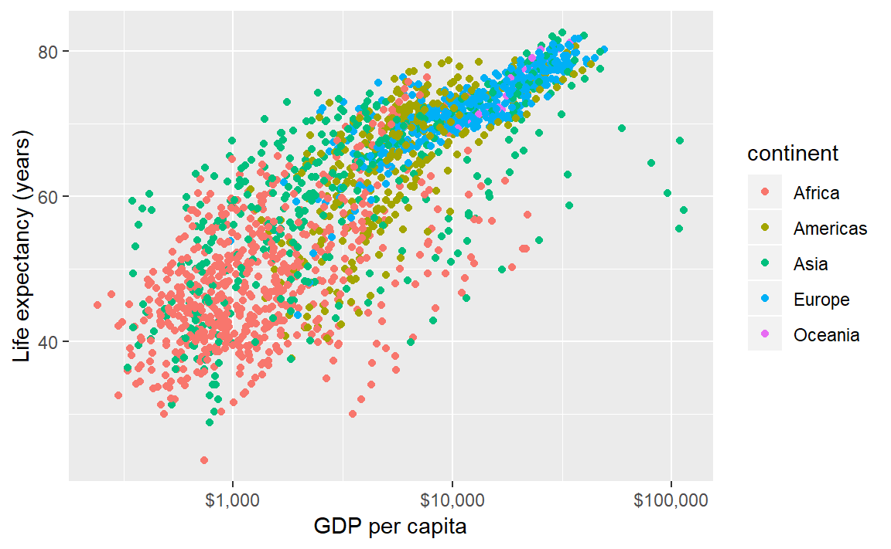
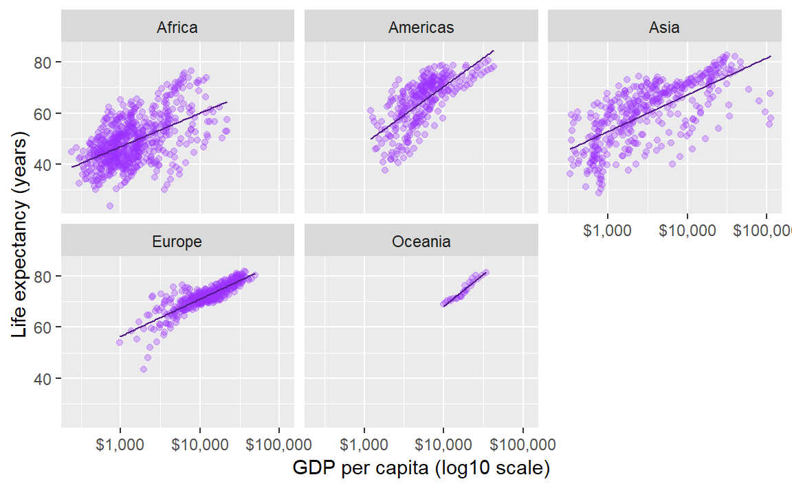

4 MIDFIELD Pre-Institute Workshop
Agenda [link]
This is an optional session designed for R novices. If you cannot attend this session on Sunday, you are welcome to work these tutorials on your own before the Monday/Tuesday sessions.
The tutorials give the R novice a quick introduction to three essential elements of data science using R:
The tutorials are designed to be completed by an R novice in less than 50 minutes each. The timing has been student-tested, but of course your mileage may vary.
4.1 R basics
If the prerequisites have been met, the tutorial should take less than 50 minutes.
An introduction to R adapted from (Healy, 2019a) with extra material from (Matloff, 2019). If you already have R experience, you might still want to browse this section in case you find something new.
4.1.1 Prerequisites
- We assume you have completed all of the Getting started instructions.
- Run
midfield_institute.Rprojto start every work session
Packages
- Run the following line of code in the RStudio Console to install the socviz package.
devtools::install_github("kjhealy/socviz")Use File > New File > R Script to create a new R script
- Name the script
01-R-basics.R(R filenames can begin with numbers) - Save it in the
scriptsdirectory
Add a minimal header at the top of the script (if you wish) then use library() to load the packages we will use. Loading all the libraries at the top of a script is conventional practice.
# workshop R basics
# name
# date
library("tidyverse")
library("socviz")Guidelines
- In this script type the lines of code in the tutorial below one line at a time.
- After every line, File > Save, and hit the Source button to run the code.
- Confirm that your result matches the result in the tutorial.
- Your turn exercises give you chance to devise your own examples and check them out. You learn by doing (but you knew that already)!
4.1.2 Everything in R has a name
In R, every object has a name.
- named entities, like
xory
- data you have loaded, like
my_data - functions you use, like
sin()
Some names are forbidden
- reserved words, like
TRUEorFALSE
- programming words, like
Inf,for,else, andfunction
- special entities, like
NAandNaN
Some names should not be used because they name commonly used functions
q()quitc()combine or concatenatemean()range()var()variance
Names in R are case-sensitive
my_dataandMy_Dataare different objects- I follow the style guide used in the tidyverse by naming things in lower case, with words separated by underscores, and no spaces
If you want to know if a name has already been used in a package you have loaded, go to the RStudio console, type a question mark followed by the name, e.g.,
? c()? mean()
If the name is in use, a help page appears in the RStudio Help pane.
4.1.3 Everything in R is an object
Origins of R objects
- Some objects are built in to R
- Some objects are loaded with packages
- Some objects are created by you
Type this line of code in your script, Save, Source. c() is the function to combine or concatenate its elements to create a vector.
c(1, 2, 3, 1, 3, 25)In these notes, everything that comes back to us in the Console as the result of running a script is shown prefaced by #>. For example, after running your script, the Console should show,
#> [1] 1 2 3 1 3 25But what is that [1] here? It’s just a row label. We’ll go into that later, not needed yet.
We can assign the vector to a name.
x <- c(1, 2, 3, 1, 3, 25)
y <- c(5, 31, 71, 1, 3, 21, 6)To see the result in the Console, type the object name in the script, Save, and Source. (Remember, type the line of code but not the line prefaced by #>—that’s the output line so you can check your results.)
x#> [1] 1 2 3 1 3 25y#> [1] 5 31 71 1 3 21 6You create objects my assigning them names
<-is the assignment operator (keyboard shortcut: ALT –)- objects exist in your R project workspace, listed in the RStudio Environment pane

Datasets are also named objects, and a large number of datasets are included in the base R installation. For example,LakeHuron contains annual measurements of the lake level, in feet, from 1875–1972.
LakeHuron#> Time Series:
#> Start = 1875
#> End = 1972
#> Frequency = 1
#> [1] 580.38 581.86 580.97 580.80 579.79 580.39 580.42 580.82 581.40 581.32
#> [11] 581.44 581.68 581.17 580.53 580.01 579.91 579.14 579.16 579.55 579.67
#> [21] 578.44 578.24 579.10 579.09 579.35 578.82 579.32 579.01 579.00 579.80
#> [31] 579.83 579.72 579.89 580.01 579.37 578.69 578.19 578.67 579.55 578.92
#> [41] 578.09 579.37 580.13 580.14 579.51 579.24 578.66 578.86 578.05 577.79
#> [51] 576.75 576.75 577.82 578.64 580.58 579.48 577.38 576.90 576.94 576.24
#> [61] 576.84 576.85 576.90 577.79 578.18 577.51 577.23 578.42 579.61 579.05
#> [71] 579.26 579.22 579.38 579.10 577.95 578.12 579.75 580.85 580.41 579.96
#> [81] 579.61 578.76 578.18 577.21 577.13 579.10 578.25 577.91 576.89 575.96
#> [91] 576.80 577.68 578.38 578.52 579.74 579.31 579.89 579.96Now you can see how the row labels work. There are 10 numbers per row, here, so the second row starts with the 11th, indicated by [11]. The last row starts with the 91st value [91] and ends with the 98th value.
- In the Console, type
? LakeHuronto see the help page for the data set
Individual elements of a vector are obtained using [] notation.
For example, the first five lake level readings are extracted with
LakeHuron[1:5]#> [1] 580.38 581.86 580.97 580.80 579.79The 4th element alone,
LakeHuron[4]#> [1] 580.84.1.4 Do things in R using functions
Functions do something useful
- functions are objects the perform actions for you
- functions produce output based on the input it receives
- functions are recognized by the parentheses at the end of their names
The parentheses are where we include the inputs (arguments) to the function
c()concatenates the comma-separated numbers in the parentheses to create a vectormean()computes the mean of a vector of numberssd()computes the standard deviation of a vector of numberssummary()returns a summary of the object
If we try mean() with no inputs, we get an error statement
mean()
#> Error in mean.default() : argument "x" is missing, with no defaultIf we use the Lake Huron dataset as the argument, the function is computed and displayed. Add these lines to your script, Save, and Source.
mean(LakeHuron)#> [1] 579.0041sd(LakeHuron)#> [1] 1.318299summary(LakeHuron)#> Min. 1st Qu. Median Mean 3rd Qu. Max.
#> 576.0 578.1 579.1 579.0 579.9 581.9We can extract subsets of data using functions. For example, If we wanted only the first five even-numbered elements, we use c() to create a vector of indices to the desired elements,
LakeHuron[c(2, 4, 6, 8, 10)]#> [1] 581.86 580.80 580.39 580.82 581.32If we wanted every 5th entry over the full data set, we use length() to determine how many entries there are, and the sequence function seq() to create the vector of indices,
n <- length(LakeHuron)
LakeHuron[seq(from = 5, to = n, by = 5)]#> [1] 579.79 581.32 580.01 579.67 579.35 579.80 579.37 578.92 579.51 577.79
#> [11] 580.58 576.24 578.18 579.05 577.95 579.96 577.13 575.96 579.74Because we will be using the ggplot2 package for graphics, we will not be using the base R plot() function very often, but it is useful for a quick look at data. Add these lines to your script, Save, and Source.
plot(LakeHuron)The help pages for functions are quickly accessed via the Console. In the Console type one line at a time and Enter to see the function help page.
? mean()? sd()? summary()
4.1.5 R functions come in packages
Functions are bundled in packages
- Families of useful functions are bundled into packages that you can install, load, and use
- Packages allow you to build on the work of others
- You can write your own functions and packages too
- A lot of the work in data science consists of choosing the right functions and giving them the right arguments to get our data into the form we need for analysis or visualization
Functions operate on the input you provide and give you back a result. Type the following in your script, Save, and Source.
table(x) # table of counts#> x
#> 1 2 3 25
#> 2 1 2 1sd(y) # standard deviation#> [1] 25.14435x * 5 # multiply every element by a scalar#> [1] 5 10 15 5 15 125y + 1 # add a scalar to every element#> [1] 6 32 72 2 4 22 7x + x # add elements #> [1] 2 4 6 2 6 50Comments are annotations to make the source code easier for humans to understand but are ignored by R. Comments in R are denoted by a hashtag #.
4.1.6 R objects have class
Everything is an object and every object has a class.
class(x)#> [1] "numeric"class(summary)#> [1] "function"Certain actions will change the class of an object. Suppose we try create a vector from the x object and a text string,
new_vector <- c(x, "Apple")
new_vector#> [1] "1" "2" "3" "1" "3" "25" "Apple"class(new_vector)#> [1] "character"By adding the word “Apple” to the vector, R changed the class from “numeric” to “character”. All the numbers are enclosed in quotes: they are now character strings and cannot be used in calculations.
The most common class of data object we will use is the data frame.
titanic # data in the socviz package#> fate sex n percent
#> 1 perished male 1364 62.0
#> 2 perished female 126 5.7
#> 3 survived male 367 16.7
#> 4 survived female 344 15.6class(titanic)#> [1] "data.frame"You can see there are four variables: fate, sex, n, percent. Two variables (columns) are numeric, two are categorical.
You can pick variable out of a data frame using the $ operator,
titanic$percent#> [1] 62.0 5.7 16.7 15.6From the tidyverse, we will regularly use a augmented data frame called a tibble. We can convert the titanic data frame to a tibble using as_tibble().
titanic_tb <- as_tibble(titanic)
class(titanic_tb)#> [1] "tbl_df" "tbl" "data.frame"titanic_tb#> # A tibble: 4 x 4
#> fate sex n percent
#> <fct> <fct> <dbl> <dbl>
#> 1 perished male 1364 62
#> 2 perished female 126 5.7
#> 3 survived male 367 16.7
#> 4 survived female 344 15.6The tibble includes additional information about the variables
4.1.7 R objects have structure
To see inside an object ask for its structure using the str() function.
str(x)#> num [1:6] 1 2 3 1 3 25str(titanic)#> 'data.frame': 4 obs. of 4 variables:
#> $ fate : Factor w/ 2 levels "perished","survived": 1 1 2 2
#> $ sex : Factor w/ 2 levels "female","male": 2 1 2 1
#> $ n : num 1364 126 367 344
#> $ percent: num 62 5.7 16.7 15.6str(titanic_tb)#> Classes 'tbl_df', 'tbl' and 'data.frame': 4 obs. of 4 variables:
#> $ fate : Factor w/ 2 levels "perished","survived": 1 1 2 2
#> $ sex : Factor w/ 2 levels "female","male": 2 1 2 1
#> $ n : num 1364 126 367 344
#> $ percent: num 62 5.7 16.7 15.6I also like to use the glimpse() function from the tidyverse.
glimpse(x)#> num [1:6] 1 2 3 1 3 25glimpse(titanic)#> Observations: 4
#> Variables: 4
#> $ fate <fct> perished, perished, survived, survived
#> $ sex <fct> male, female, male, female
#> $ n <dbl> 1364, 126, 367, 344
#> $ percent <dbl> 62.0, 5.7, 16.7, 15.6glimpse(titanic_tb) #> Observations: 4
#> Variables: 4
#> $ fate <fct> perished, perished, survived, survived
#> $ sex <fct> male, female, male, female
#> $ n <dbl> 1364, 126, 367, 344
#> $ percent <dbl> 62.0, 5.7, 16.7, 15.64.1.8 R does what you tell it
Expect to make errors and don’t worry when that happens. You won’t break anything. Healy (2019b) offers this advice for three specific things to watch out for:
- Make sure parentheses are balanced—that every opening
(has a corresponding closing).
- Make sure you complete your expressions. If you see a
+in the Console instead of the usual prompt>, that means that R thinks you haven’t written a complete expression. You can hitEscorCtrl Cto force your way back to the Console and try correcting the code.
- In ggplot specifically, as you will see, we create plots layer by layer, using a
+character at the end of the line—not at the beginning of the next line.
For example, you would write this,
ggplot(data = mpg, aes(x = displ, y = hwy)) +
geom_point()not this,
# error caused by incorrectly placed +
ggplot(data = mpg, aes(x = displ, y = hwy))
+ geom_point()To conclude, let’s make bar graph of the titanic data,
ggplot(data = titanic_tb, mapping = aes(x = sex, y = n, fill = fate)) +
geom_col() +
coord_flip()
Your turn. As shown, color distinguishes those who survived from those who did not and bar length gives totals by sex. Make a small change so that color denotes sex and bar length gives totals of survived and perished.
4.1.9 Keyboard shortcuts
In Windows,
Ctrl Lclears the Console
Alt -creates the assignment operator<-
Ctrl Enterruns the selected line(s) of code in an R script
Feel free to take a break before starting the next tutorial.
4.2 Graph basics

Decline by Randall Munroe (xkcd.com) is licensed under CC BY-NC 2.5
If the prerequisites have been met, the tutorial should take less than 50 minutes.
An introduction to ggplot2 adapted from Chapter 3 from (Healy, 2019b). If you already have R experience, you might still want to browse this section in case you find something new.
4.2.1 Prerequisites
- We assume you have completed all of the Getting started instructions.
- Run
midfield_institute.Rprojto start every work session
Packages
- If any of these packages have not yet been installed, they can be installed using these commands,
install.packages("tidyverse")
install.packages("gapminder") Use File > New File > R Script to create a new R script
- Name the script
02-graph-basics.R
- Save it in the
scriptsdirectory
Add a minimal header at the top of the script (if you wish) then use library() to load the packages we will use. Loading all the libraries at the top of a script is conventional practice.
# workshop graph basics
# name
# date
library("tidyverse")
library("gapminder")Guidelines
- In this script type the lines of code in the tutorial below one line at a time.
- After every line, File > Save, and hit the Source button to run the code.
- Confirm that your result matches the result in the tutorial.
- Your turn exercises give you chance to devise your own examples and check them out. You learn by doing (but you knew that already)!
4.2.2 Tidy data
If the data set is “tidy”, then every row is an observation and every column is a variable. The gapminder data frame is tidy. We use glimpse() to get a look at the structure.
glimpse(gapminder)#> Observations: 1,704
#> Variables: 6
#> $ country <fct> Afghanistan, Afghanistan, Afghanistan, Afghanistan, ...
#> $ continent <fct> Asia, Asia, Asia, Asia, Asia, Asia, Asia, Asia, Asia...
#> $ year <int> 1952, 1957, 1962, 1967, 1972, 1977, 1982, 1987, 1992...
#> $ lifeExp <dbl> 28.801, 30.332, 31.997, 34.020, 36.088, 38.438, 39.8...
#> $ pop <int> 8425333, 9240934, 10267083, 11537966, 13079460, 1488...
#> $ gdpPercap <dbl> 779.4453, 820.8530, 853.1007, 836.1971, 739.9811, 78...And we can just type its name to see the first few rows,
gapminder#> # A tibble: 1,704 x 6
#> country continent year lifeExp pop gdpPercap
#> <fct> <fct> <int> <dbl> <int> <dbl>
#> 1 Afghanistan Asia 1952 28.8 8425333 779.
#> 2 Afghanistan Asia 1957 30.3 9240934 821.
#> 3 Afghanistan Asia 1962 32.0 10267083 853.
#> 4 Afghanistan Asia 1967 34.0 11537966 836.
#> 5 Afghanistan Asia 1972 36.1 13079460 740.
#> 6 Afghanistan Asia 1977 38.4 14880372 786.
#> 7 Afghanistan Asia 1982 39.9 12881816 978.
#> 8 Afghanistan Asia 1987 40.8 13867957 852.
#> 9 Afghanistan Asia 1992 41.7 16317921 649.
#> 10 Afghanistan Asia 1997 41.8 22227415 635.
#> # ... with 1,694 more rowsRead more about tidy data in (Wickham and Grolemund, 2017).
Your turn. The ggplot2 package includes a dataset called
mpg.
- Use
glimpse()to examine the data set.- How many variables? How many observations?
- How many of the variables are numeric? How many are character type?
- Is the data set tidy?
Check your work. There are 234 observations and 11 variables.
4.2.3 Anatomy of a graph
ggplot() is a our basic plotting function. The data = ... argument assigns the data frame.
p <- ggplot(data = gapminder)Next we use the mapping argument mapping = aes(...) to assign variables (column names) from the data frame to specific aesthetic properties of the graph such as the x-coordinate, the y-coordinate color, fill, etc.
Here we will map the GDP per capita variable to x and the life expectancy variable to y.
p <- ggplot(data = gapminder, mapping = aes(x = gdpPercap, y = lifeExp))If we try to print the graph by typing the name of the graph object (everything in R is an object), we get an empty graph because we haven’t told ggplot what sort of a graph we want.
pBecause the graph will be a scatterplot, we add the geom_point() layer.
p <- p +geom_point()
p # display the graph
In ggplot2, “geoms” are geometric objects such as points, lines, bars, boxplots, contours, polygons, etc. You can browse the full list on the ggplot2 geom reference page.
We could also have simply added the layer to the original object,
p <- ggplot(data = gapminder, mapping = aes(x = gdpPercap, y = lifeExp)) +
geom_point()
p # display the graph
Notice that the default axis labels are the variables names from the data frame. We can edit those with another layer
p <- p + labs(x = "GDP per capita", y = "Life expectancy (years)")
p # display the graphOr, with all layers shown in one code chunk,
p <- ggplot(data = gapminder, mapping = aes(x = gdpPercap, y = lifeExp)) +
geom_point() +
labs(x = "GDP per capita", y = "Life expectancy (years)")
p # display the graph
Summary. The basics steps for building up the layers of any graph consist of,
- assign the data frame
- map variables (columns names) to aesthetic properties
- choose geoms
- adjust scales, labels, etc.
For more information
- aes() help page
- geom_point() help page
- geom_labs() help page
Your turn.
- In the console, type
? mpgto see the data set help page. Skim the descriptions of the variables.
- Create a scatterplot of highway miles per gallon as a function of engine displacement in liters.
Check your work:
4.2.4 Layer: smooth fit
Suppose you wanted a smooth fit curve, not necessarily linear. Add a geom_smooth() layer. The name loess (pronounced like the proper name Lois) is a nonparametric curve-fitting method based on local regression.
p <- p + geom_smooth(method = "loess", se = FALSE)
p # display the graph
The se argument controls whether or not the confidence interval is displayed. Setting se = TRUE yields,
p <- p + geom_smooth(method = "loess", se = TRUE)
p # display the graph
For a linear-fit layer, we add a layer with method set to lm (short for linear model). The linear fit is not particularly good in this case, but now you know how to do one.
p <- p + geom_smooth(method = "lm", se = TRUE)
p # display the graph
For more information
- geom_smooth() help page
Your turn. Continue to practice with
mpg.
- Add a loess curve fit with a confidence interval.
Check your work:
4.2.5 Layer: log scale
We have orders of magnitude differences in the GDP per capita variable. To confirm, we can summarize() the gdpPercap variable. The output shows that the minimum is 241, the median 3532, and the maximum 113523.
# extract one variable from the data frame
this_variable <- gapminder["gdpPercap"]
# staistical summary of one variable
summary(this_variable)#> gdpPercap
#> Min. : 241.2
#> 1st Qu.: 1202.1
#> Median : 3531.8
#> Mean : 7215.3
#> 3rd Qu.: 9325.5
#> Max. :113523.1The bracket notation I just used, gapminder["gdpPercap"], is one way to extract a variable from a data frame.
In exploring a graph like this, it might be useful to add a layer that changes the horizontal scale to a log-base-10 scale.
p <- ggplot(data = gapminder, mapping = aes(x = gdpPercap, y = lifeExp)) +
geom_point() +
scale_x_log10()
p # display the graph
The scales package allows us to change the GDP scale to dollars. Using the syntax thepackage::thefunction we can use the scales::dollar function without loading the scales package.
p <- ggplot(data = gapminder, mapping = aes(x = gdpPercap, y = lifeExp)) +
geom_point() +
scale_x_log10(labels = scales::dollar)
p # display the graphIn this case, a linear fit might work,
p <- p + geom_smooth(method = "lm", se = TRUE)
p # display the graphUpdate the axis labels,
p <- p + labs(x = "GDP per capita (log10 scale)", y = "Life expectancy (years)")
p # display the graph
In summary, all the layers could have been be coded at once, for example,
p <- ggplot(data = gapminder, mapping = aes(x = gdpPercap, y = lifeExp)) +
geom_point() +
geom_smooth(method = "lm", se = TRUE) +
scale_x_log10(labels = scales::dollar) +
labs(x = "GDP per capita (log10 scale)", y = "Life expectancy (years)")With all the layers in one place, we can see that we’ve coded all the basic steps, that is,
- assign the data frame
- map variables (columns names) to aesthetic properties
- choose geoms
- adjust scales, labels, etc.
For more information
- scale_x_log10() help page
Your turn. Continue to practice with
mpg.
- Edit the axis labels to include units.
Check your work:

4.2.6 Mapping aesthetics
So far, we have mapped variables only to the x-coordinate and y-coordinate aesthetics.
If we map a variable to the color aesthetic, the data symbols are automatically assigned different colors and a legend is created. I this example, we map the continent variable to color.
p <- ggplot(data = gapminder,
mapping = aes(x = gdpPercap, y = lifeExp, color = continent)) +
geom_point() +
scale_x_log10(labels = scales::dollar) +
labs(x = "GDP per capita", y = "Life expectancy (years)")
p # print the graph
Your turn. Continue to practice with
mpg.
- Map vehicle class to color
- Change the curve fit to linear
Check your work:

4.2.7 Setting properties
Because the colors overprint, we might try making the data symbols slightly transparent. In this case, we are not mapping a property to a variable; instead, we want all data symbols to be less opaque.
The alpha argument, with \(0 \leq \alpha \leq 1\), sets the transparency level. Because this change applies to all data points equally, we assign it in the geom, not aes().
p <- ggplot(data = gapminder,
mapping = aes(x = gdpPercap, y = lifeExp, color = continent)) +
geom_point(alpha = 0.3) +
scale_x_log10(labels = scales::dollar) +
labs(x = "GDP per capita", y = "Life expectancy (years)")
p # print the graph
If we add a linear fit to these data, a fit for each continent is generated. For a thinner line, I’ve added a size argument to the geom.
p <- p + geom_smooth(method = "lm", se = FALSE, size = 0.5)
p # print the graph
If we want all the data markers the same color but we want to change the color, we don’t map it, we set it in the geom.
Here, I’ve omitted the aesthetic mapping to color and used a color assignment in the geom.
p <- ggplot(data = gapminder, mapping = aes(x = gdpPercap, y = lifeExp)) +
geom_point(alpha = 0.3, color = "purple1") +
geom_smooth(method = "lm", se = FALSE, size = 0.5, color = "purple4") +
scale_x_log10(labels = scales::dollar) +
labs(x = "GDP per capita (log10 scale)", y = "Life expectancy (years)")
p # print the graph
For more information
4.2.8 Layer: facets
In the earlier graph where we mapped continent to color, there was a lot of overprinting, making it difficult to compare the continents.
The facet_wrap() layer separates the data into different panels (or facets). Like the aes() mapping, facet_wrap() is applied to a variable (column name) in the data frame.
p <- p + facet_wrap(facets = vars(continent))
p # print the graph
Comparisons are facilitated by having the facets appear in one column, by using the ncols argument of facet_wrap().
p <- p + facet_wrap(facets = vars(continent), ncol = 1)
p # print the graphIn a faceted display, all panels have identical scales (the default) to facilitate comparison.
Again, all the layers could have been be coded at once, for example,
ggplot(data = gapminder, mapping = aes(x = gdpPercap, y = lifeExp)) +
geom_point(alpha = 0.3, color = "purple1") +
geom_smooth(method = "lm", se = FALSE, size = 0.5, color = "purple4") +
facet_wrap(facets = vars(continent), ncol = 1) +
scale_x_log10(labels = scales::dollar) +
labs(x = "GDP per capita (log10 scale)", y = "Life expectancy (years)") For more information
- facet_wrap() help page
Your turn. Continue to practice with
mpg.
- Map drive type to color
- Facet on vehicle class
- Add some transparency to the data symbols
- Omit the smooth fit
Check your work:

4.2.9 Ordering the panels
The default ordering of the panels in this example is alphabetical. In most cases, ordering the panels by the data (often the mean of the median) improves the display.
Here we have two quantitative variables, but the one that is the more interesting is life expectancy. Our goal then is to order the continent variable by the median of the lifeExp variable in each panel.
To do that, we require continent to be a factor, a type of variable specialized for creating ordered levels of a category. Using gimpse() we see that continent is already a factor (<fct>).
glimpse(gapminder)#> Observations: 1,704
#> Variables: 6
#> $ country <fct> Afghanistan, Afghanistan, Afghanistan, Afghanistan, ...
#> $ continent <fct> Asia, Asia, Asia, Asia, Asia, Asia, Asia, Asia, Asia...
#> $ year <int> 1952, 1957, 1962, 1967, 1972, 1977, 1982, 1987, 1992...
#> $ lifeExp <dbl> 28.801, 30.332, 31.997, 34.020, 36.088, 38.438, 39.8...
#> $ pop <int> 8425333, 9240934, 10267083, 11537966, 13079460, 1488...
#> $ gdpPercap <dbl> 779.4453, 820.8530, 853.1007, 836.1971, 739.9811, 78...Therefore all we have to do is tell R that we want the levels of continent ordered by the median of life expectancy using the fct)reorder() function.
gapminder <- gapminder %>%
mutate(continent = fct_reorder(continent, lifeExp, median))In doing so, I’ve overwritten the original gapminder dataset with my revised version.
We set the as.table argument to false to place the panel with the highest life expectancy in the top position.
ggplot(data = gapminder, mapping = aes(x = gdpPercap, y = lifeExp)) +
geom_point(alpha = 0.3, color = "purple1") +
geom_smooth(method = "lm", se = FALSE, size = 0.5, color = "purple4") +
facet_wrap(facets = vars(continent), ncol = 1, as.table = FALSE) +
scale_x_log10(labels = scales::dollar) +
labs(x = "GDP per capita (log10 scale)", y = "Life expectancy (years)") 
For more information
- mutate() help page
- fct_reorder() help page
Your turn. Continue to practice with
mpg.
- Convert
classto a factor ordered by the mean highway mileage- Same graph as before, but order the panels by mean fuel consumption
Check your work:

4.2.10 Beyond the basics
Demonstrating how the basics can be built upon to create a complex data graphic.
To wrap up this introduction, I’ll show you how we can use functions in various layers to show all the data in every panel; add a common overall loess smooth fit; and highlight the the continent data in each panel, making it easier to compare each continent to the global data.
Because life expectancy has generally increased over time, I’m going to restrict this final graph to 2007, the most recent year in this dataset.
Typing this code in your script is optional. Without further explanation, here’s the code.
gapminder <- gapminder %>%
filter(year == 2007)
ggplot(data = gapminder, mapping = aes(x = gdpPercap / 1000, y = lifeExp)) +
geom_point(data = select(gapminder, -continent),
size = 1.25,
alpha = 0.5,
color = "#80cdc1") +
geom_smooth(data = select(gapminder, -continent),
method = "loess",
se = FALSE,
size = 0.7,
color = "#80cdc1") +
geom_point(mapping = aes(color = continent),
size = 1.25,
color = "#01665e") +
facet_wrap(vars(continent),
ncol = 1,
as.table = FALSE) +
labs(x = "GDP per capita (thousands of dollars)",
y = "Life expectancy (years)",
title = "Life expectancy by country, 2007",
caption = "Source: Gapminder") +
theme(legend.position = "none")
For more information
- select() help page
- filter() help page
- theme() help page
- ColorBrewer for color hex codes
4.2.11 Resize and write to file
For consistent control over the size and aspect ratio of your publication-ready graph, you should always conclude your design by saving the image and sizing it at the same time.
Here, we save the figure to the figures directory we set up earlier.
ggsave(filename = "figures/02-graph-basics-gapminder.png",
width = 6.5,
height = 10.5,
units = "in",
dpi = 300)And the final figure looks like this:

For more information
- ggsave() help page
Your turn. Continue to practice with
mpg.
- Write your ggsave() code chunk immediately following the ggplot() code chunk of the graph you want to save.
- Use ggsave to write your graph to the
figuresdirectory with the name02-graph-basics-mpg.png- Try a 6 in by 6 in figure size
Check your work: Navigate to your
figuresfolder. The new png file should be there. Open it to confirm it is the figure you expect.
Feel free to take a break before starting the next tutorial.
4.3 Data basics


If the prerequisites have been met, the tutorial should take less than 50 minutes.
References
Healy K (2019a) Get Started. Data Visualization: A Practical Introduction. Princeton University Press, Princeton, NJ, 32–53
Healy K (2019b) Data Visualization: A Practical Introduction. Princeton University Press, Princeton, NJ https://kieranhealy.org/publications/dataviz/
Matloff N (2019) fasteR: Fast Lane to Learning R! https://github.com/matloff/fasteR
Wickham H and Grolemund G (2017) R for Data Science. O’Reilly Media, Inc., Sebastopol, CA https://r4ds.had.co.nz/